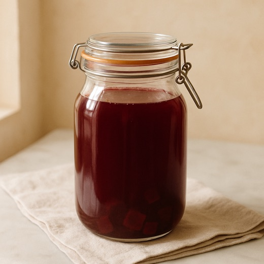

The helper’s kitchen card

Screen stays on while you make it
Tick each one as you find it · Start opens once they’re in
Wash hands and use a clean glass jar. Dice 3 beets (skin on) and fill the jar one-third full. Add 1½ level tbsp non-iodised salt (+ ginger, if Mum asked).
Done looks like: a clean jar, one-third ruby cubes.
Screen stays on while you make it
Fill with filtered water to 2–3 cm below the rim, and stir once to start the salt dissolving.
Done looks like: beets under water, a little headroom at the top.
Screen stays on while you make it
Cover with a cloth or loose lid, and leave at room temperature, out of the sun. Once a day: stir, and push the beets back under. Taste from day 3 — it's ready when it's tangy and earthy.
Tap each day as it passes — taste from day 3. (A real reminder comes with the app.)
Done looks like: deeper red and gently sour, day by day.
Screen stays on while you make it
When it tastes right: strain into a clean bottle and refrigerate. Mum has a small glass a day. The beets go on to borscht.
Done looks like: a ruby bottle in the fridge door.
Screen stays on while you make it
Mum gets a note that the jar clock is running.
Sent to Mum — day one starts now.
From Mum: “Thank you.”
A helper’s phone — big type, one step at a time